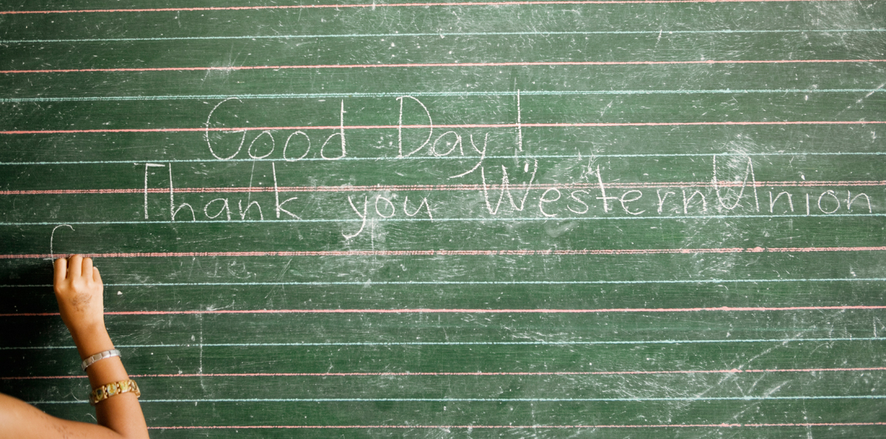

The Western Union Foundation
The Western Union Foundation is dedicated to creating a better world, where the ability to realize dreams through economic opportunity is not just a privilege for the few but a right for all. Through our signature program, Education for Better, the Western Union Company, its employees, Agents, and business partners, and the Western Union Foundation work to realize this vision by supporting education and disaster relief efforts as pathways toward a better future.
learn more

Sponsorship of Events
Every day, somewhere in the world, Western Union employees are involved in making a donation, raising funds or volunteering time and resources to support the communities in which our consumers live and work. We're proud of the work we have done and of our commitment to positive programs that can help, inspire and empower communities around the globe.
Learn MoreFamily Scholarships
The Western Union Foundation Family Scholarship Program supports two immigrant students from one family. Two family members receiving a scholarship to help achieve the type of education they need in order to create a brighter future for their entire family. Scholarships are used for college tuition, language acquisition, technical training and GED classes.
Learn MoreAshoka
Select WU leaders give pro bono service to global social entrepreneurs through the Ashoka Executives in Residence program.
“It was a great experience out of my regular work and into other realities of life that we may not give enough attention to normally.”
Bassem (on left) – VP, Key Initiatives